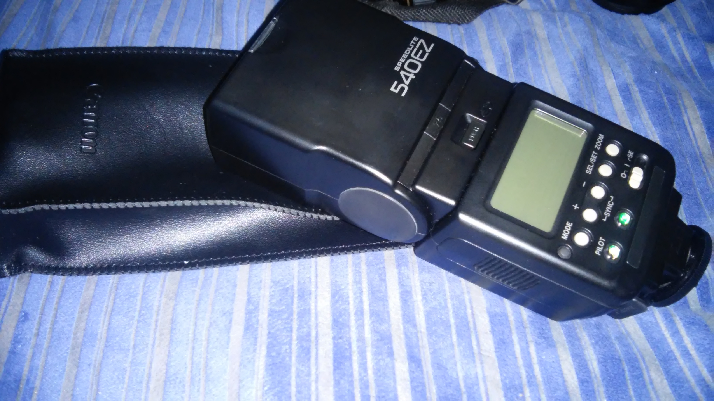
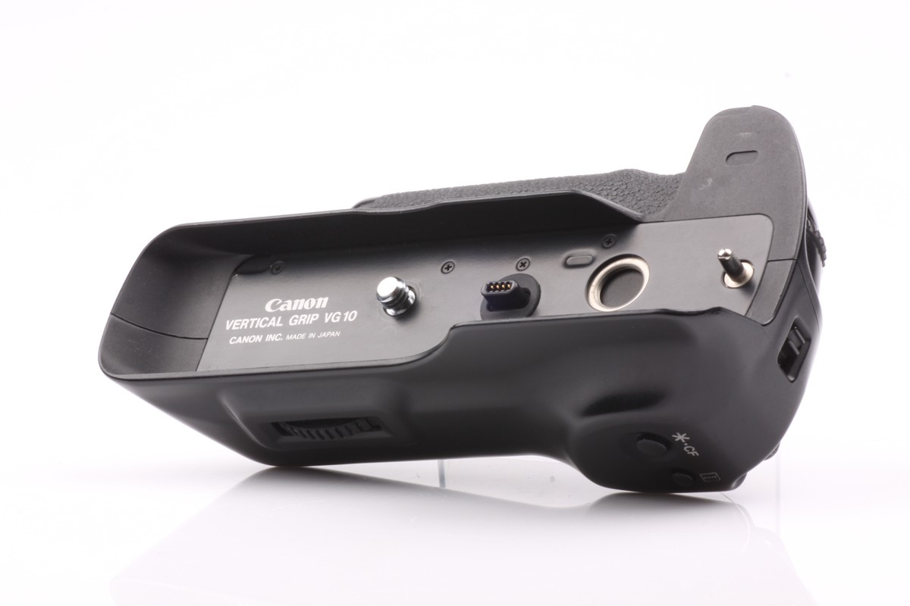
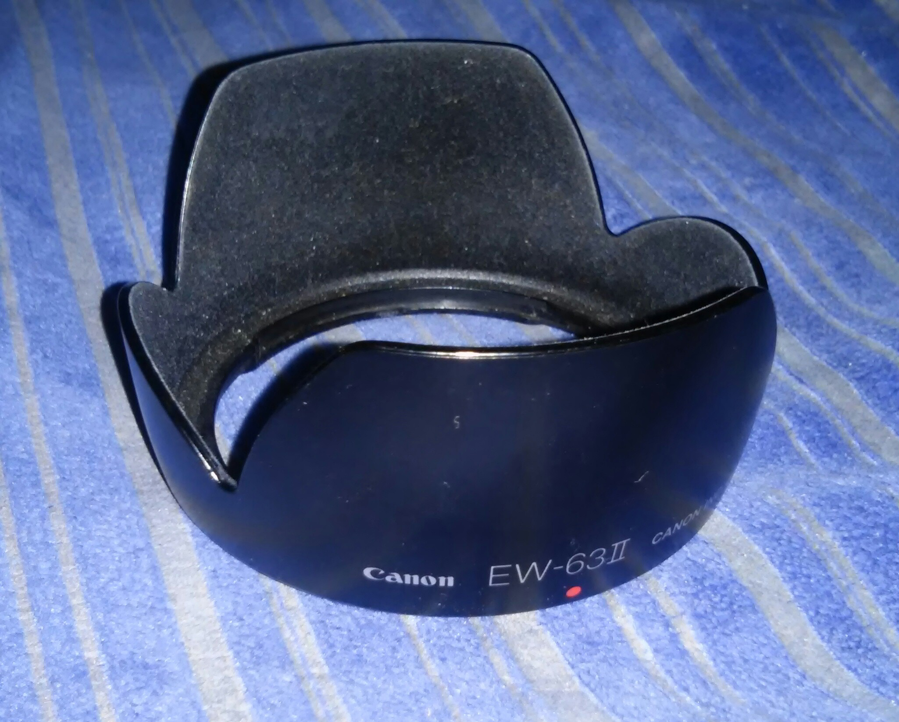

Digital and analog cameras: Canon EOS 5 analog
 First 35mm SLR camera w/ Eye Controlled Focus. 16-zone evaluative metering linked to the five focusing points, shutter speed-priority AE, aperture-priority AE, Intelligent program AE, depth-of-field AE, Programmed Image Control modes, and metered manual.
First 35mm SLR camera w/ Eye Controlled Focus. 16-zone evaluative metering linked to the five focusing points, shutter speed-priority AE, aperture-priority AE, Intelligent program AE, depth-of-field AE, Programmed Image Control modes, and metered manual.
Lenses: Canon EF 28-105mm f/3.5-4.5 USM Standard Zoom Lens for SLR
USM provides silent, high-speed autofocusing. 1.6-foot close focusing distance; rotating zoom system; 58mm filter size. Ideal for Canon EOS A2/Aw3 or ELAN 7 series cameras with built-in flashes. Measures 2.8 inches in diameter and 3 inches long; weighs 12.9 ounces
{kind=link}
Flashes: Canon Speedlite 540EZ
 Color temperature is equivalent to daylight. Compatible with all Canon EOS cameras. 18mm super-wide-angle coverage. Compatible with Canon EOS 1N 5-point AF and 3-point TTL flash metering functions. 7 zoom stop positions
{kind=link}
Battery grips: Canon battery grip VG 10
 Tahoe Greg is back from his tour. New songs. New stories.
{kind=link}
Lens hoods: Canon EW63ii
 Canon 2647A002 EW63II Lens Hood for EF 28 f/1.8, 28-105 f/3.5-4.5 & 28-105 f/4.0-5.6 SLR Lens.A lens hood provides multiple functions: it shades the lens from stray light, improving your contrast and image quality;
{kind=link}